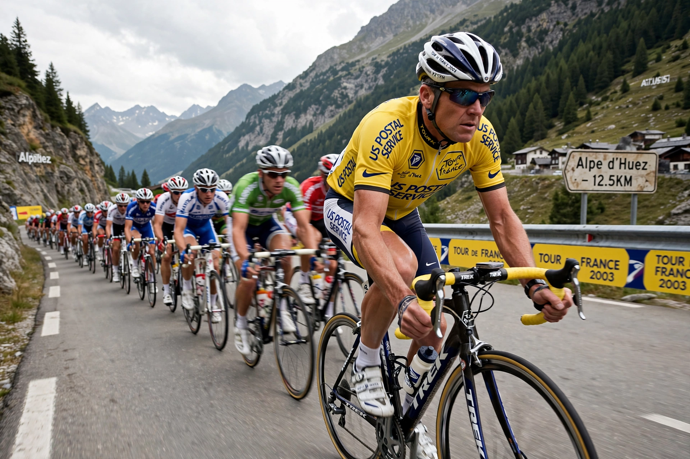

Lance Edward Armstrong (born Lance Edward Gunderson, 18 September 1971) is an American former professional road racing cyclist. He won the Tour de France a record seven consecutive times from 1999 to 2005, but was stripped of all titles and banned for life in 2012 after a doping investigation.

| Born | 18 September 1971, Plano, Texas, USA |
|---|---|
| Discipline | Road cycling |
| Major wins | World Championships 1993; Tour de France titles later stripped |
Armstrong turned professional in 1992 and won the World Road Race Championship in 1993. In 1996 he was diagnosed with metastatic testicular cancer, from which he recovered after chemotherapy, founding the Lance Armstrong Foundation (later Livestrong) for cancer support. Returning to racing with US Postal, he dominated the Tour de France from 1999. He retired in 2005, made a comeback in 2009–2011, and retired again.
In 2012 the US Anti-Doping Agency concluded Armstrong had used performance-enhancing drugs and trafficked them as part of 'the most sophisticated doping program in sport', based largely on teammate testimony. The UCI ratified the sanctions, erasing his results from 1998 onward. In a January 2013 interview with Oprah Winfrey, Armstrong admitted doping throughout his Tour wins. He later settled a US government lawsuit for $5 million in 2018.